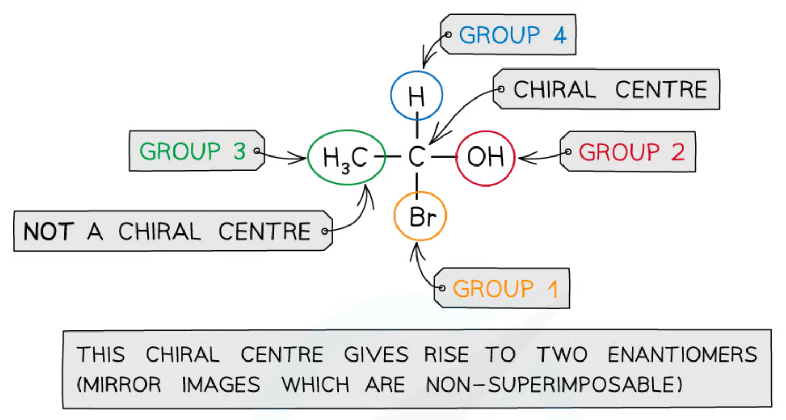
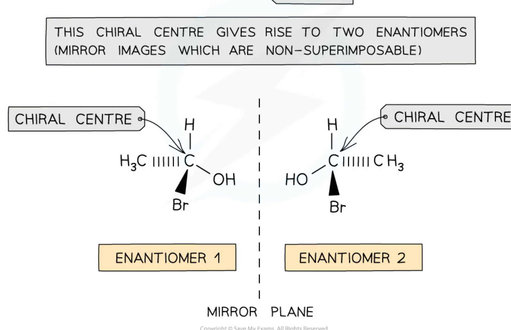
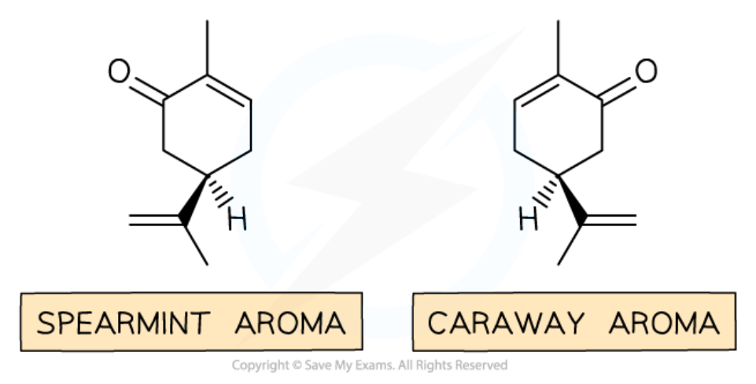
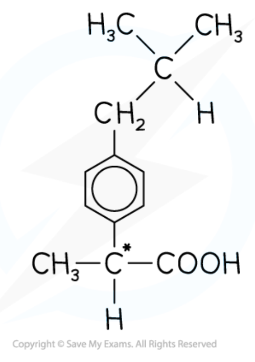
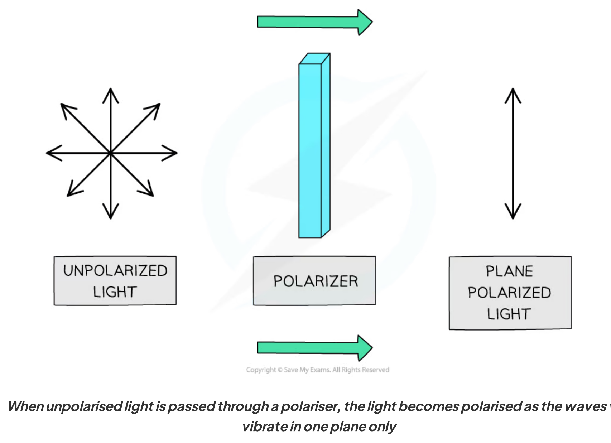
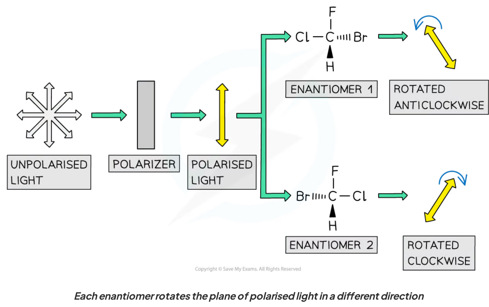
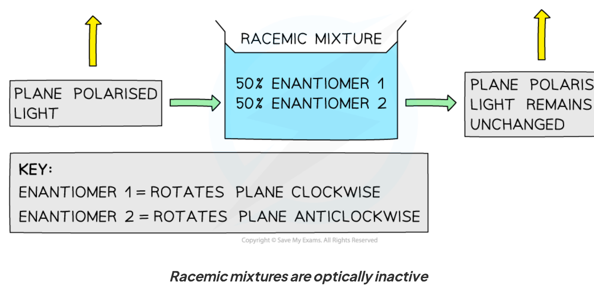
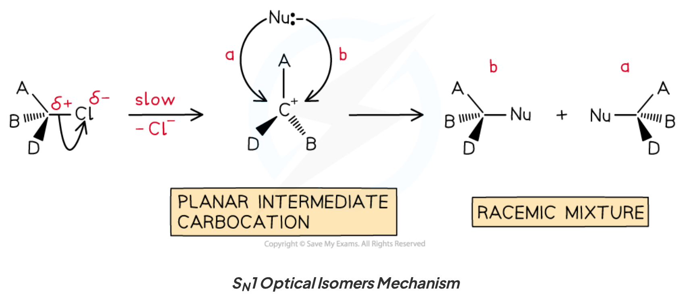
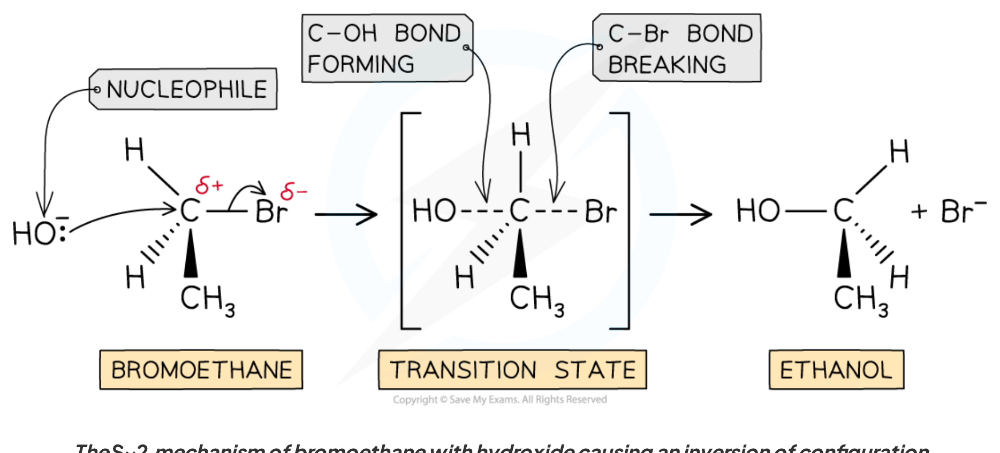
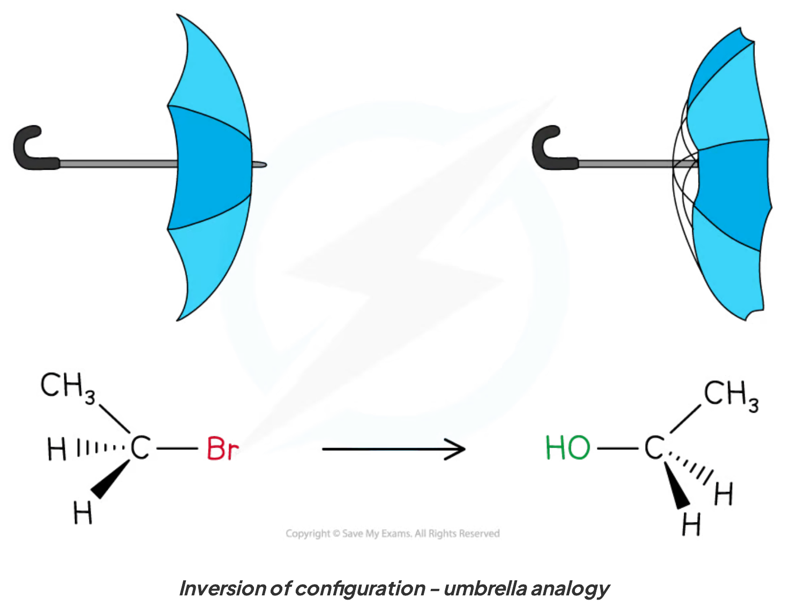

4.6 Organic Chemistry Chirality · Topic 15A
Chiral centres, enantiomers, optical activity and reaction mechanisms
4.6 Organic Chemistry Chirality · Topic 15A
本页严格按 Pearson Edexcel International Advanced Level Chemistry specification 的 Topic 15A: Chirality 编排，主要依据项目内的 4.6 Organic Chemistry Chirality.pdf.pdf。解释采用中文，专业词汇保留 English，便于和 specification 及 exam wording 对照。
Learning objectives
学完本章后，你应该能够：
- explain how chirality produces optical isomerism；
- identify a chiral centre / asymmetric carbon atom；
- draw enantiomers as three-dimensional, non-superimposable mirror images；
- explain optical activity and the rotation of plane-polarised monochromatic light；
- define a racemic mixture and explain why it is optically inactive；
- use optical activity data as evidence for SN1 / SN2 mechanisms and addition to carbonyl compounds。
15.1 Chirality and optical isomerism
Chiral centre
一个 carbon atom 如果 bonded to four different atoms or groups，就是 chiral centre，也常称 asymmetric carbon atom。这样的 tetrahedral centre 没有 plane of symmetry，molecule 具有 handedness，称为 chiral。
如果 carbon 上有两个相同的 substituents，则不是 chiral centre；molecule 可能是 achiral。

Enantiomers
含有 one chiral centre 的 molecule 通常形成 two optical isomers，也叫 enantiomers：
- 它们互为 mirror images；
- mirror image 不能和原 molecule 完全重合，称为 non-superimposable；
- 两个 enantiomers 的 connectivity 相同，但 three-dimensional arrangement 不同；
- 画图时使用 solid wedge 表示 bond 向观察者，hashed wedge 表示 bond 远离观察者。

Number of stereoisomers
若 molecule 有 \(n\) 个 independent chiral centres，理论上最多有：
\[ \text{number of stereoisomers}=2^n \]
例如 two chiral centres 最多有 four stereoisomers，即 two enantiomeric pairs；three chiral centres 最多有 eight。实际数量可能因 meso compounds 或 molecular symmetry 而减少。Topic 15A 的核心 focus 是 single chiral centre 产生的一对 enantiomers。
15.2 Properties of enantiomers
Same in achiral surroundings
在 achiral environment 中，enantiomers 通常有相同的：
- chemical properties；
- melting point、boiling point、density 等 physical properties；
- reaction rate with achiral reagents。
但 chiral biological sensors、enzymes 或 receptors 可以区分两个 enantiomers。因为 biological molecules 本身往往是 chiral，所以两个 mirror images 可能表现出不同的 smell、taste 或 biological activity。

Pharmaceutical significance
药物常以 racemic mixture 形式制备，因为同时合成两个 enantiomers 通常比单独分离一个 enantiomer 简单、便宜。可是，两个 enantiomers 的 pharmacological activity 可能不同：一个可能是 active enantiomer，另一个 activity 较低，甚至产生 unwanted effects。
Ibuprofen 是常见例子：它有一个 chiral centre，商业制剂可含 racemic mixture。考试中要把 chemical equivalence in achiral surroundings 与 different interaction with chiral biological targets 区分开。

15.3 Optical activity
Plane-polarised monochromatic light
普通 light 的 electric field 在多个方向振动。通过 polariser 后，只保留一个方向的振动，形成 plane-polarised light。光源应为 monochromatic light，这样 rotation data 才能在明确的 wavelength 下比较。

Optical activity and direction of rotation
Optical activity 是 single optical isomer 使 plane-polarised light 的 plane 发生 rotation 的性质：
- clockwise rotation：用 \((+)\) 或 historically \(d\) 表示；
- anticlockwise rotation：用 \((-)\) 或 historically \(l\) 表示；
- 两个 enantiomers 造成 equal magnitude、opposite direction 的 rotation。
注意：\((+)/(−)\) 或 \(d/l\) 只描述实验观测到的 rotation direction，不能从它直接推出 R/S configuration。R/S 是另一套 configuration naming system。

Worked example · interpreting optical activity
某 sample 使 plane-polarised light 顺时针旋转，另一个 sample 使光线以相同角度逆时针旋转。
Conclusion： two samples are consistent with a pair of enantiomers，前提是其他 conditions（concentration、path length、temperature 和 wavelength）相同。顺时针的 sample 可记为 \((+)\)，逆时针的 sample 可记为 \((-)\)；不能仅凭这项数据指定 R 或 S。
15.4 Racemic mixtures
Definition and optical inactivity
Racemic mixture（racemate）是 two enantiomers 的 equal amounts mixture，通常写作 50:50 mixture。每个 enantiomer 对 plane-polarised light 的 rotation magnitude 相同，但 direction 相反：
\[ \text{net rotation}=\text{clockwise rotation}+\text{anticlockwise rotation}=0 \]
因此 racemic mixture 是 optically inactive。这并不表示其中没有 chiral molecules，而是两个 enantiomers 的 optical effects 互相 cancel。

Racemate vs enantiopure sample
| Sample | Composition | Net optical rotation |
|---|---|---|
| enantiopure \((+)\) | essentially one enantiomer | clockwise |
| enantiopure \((-)\) | essentially the other enantiomer | anticlockwise |
| racemic mixture | equal amounts of both | zero / optically inactive |
若 mixture 不是 50:50，通常会观察到 partial rotation；rotation direction 反映 excess enantiomer 的 direction。
15.5 Optical activity and reaction mechanisms
SN1 mechanism
Planar carbocation gives racemisation
SN1 是 two-step nucleophilic substitution：
- C–X bond undergoes heterolytic fission，先形成 planar carbocation；
- nucleophile 可以从 carbocation 的 either face attack。
由于 intermediate 是 planar，starting enantiopure substrate 可能得到 two configurations 的 products，形成 racemic mixture（或接近 racemic 的 product mixture）。因此由 optically active reactant 变成 optically inactive / much less active product，可作为 SN1 pathway 的 evidence。

SN2 mechanism
Backside attack gives inversion
SN2 是 one-step concerted mechanism。Nucleophile 从 leaving group 的 opposite side 进行 backside attack，同时 C–Nu bond forming 和 C–X bond breaking：
- transition state 中 carbon 同时与 nucleophile 和 leaving group 相连；
- steric effects 使 backside attack 更有利；
- product 的 configuration 发生 inversion of configuration，常用 “umbrella turning inside out” 理解；
- enantiopure reactant 通常给出 enantiopure product，而不是 racemic mixture。


Optical activity as mechanism evidence
| Observation from an optically active substrate | Mechanistic interpretation |
|---|---|
| Product is racemic or shows major loss of optical purity | planar intermediate is plausible；supports SN1 |
| Product is one inverted enantiomer | backside attack；supports SN2 |
| Product retains configuration | may indicate a different pathway or competing stereochemical steps；需要更多 evidence |
这些 observations 是 evidence，不是单独的 absolute proof。还应结合 substrate structure、solvent、nucleophile、leaving group 和 rate law。
Addition to carbonyl compounds
Attack at a planar carbonyl carbon
Carbonyl carbon 是 approximately planar，\(π\) bond 使 carbonyl group 的两面可以被 nucleophile 接近。如果 nucleophile addition 后形成 a new chiral centre，而原来的 carbonyl compound 和 reagents 没有 chiral bias，nucleophile 从 either face attack 往往产生 a pair of enantiomers，因而得到 racemic mixture。
这与 SN1 的 stereochemical reasoning 相似：关键是 reaction centre 是否提供两个等价的 faces；但 carbonyl addition 的 intermediate、leaving group 和 overall mechanism 需要根据具体 reaction 判断。
Exam checklist
Source note
本页面对应：Note per Chapter/Note per Chapter/4.6 Organic Chemistry Chirality.pdf.pdf；考纲范围对应 International-A-Level-Chemistry-Spec 的 Topic 15A: Chirality（15.1–15.5）。页面中的示意图均从本章 note 独立提取并保存到 assets/notes/chirality/，便于单独放大和复用。